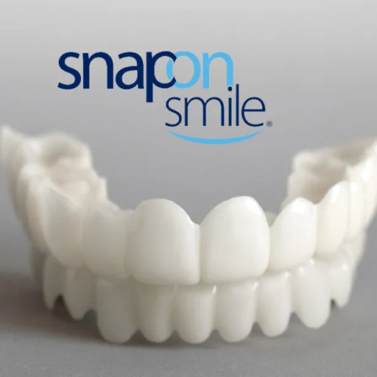

<section class="advantage__section">
    
    <div class="container">
        <div class="advantage__section-wrapper">
            <h2 class="advantage__section-title">
                3 langkah mudah dan senyuman Anda menjadi tak terlupakan
            </h2>
            <span class="advantage__number">
                1
            </span>
            <div class="advantage__block">
                <p class="advantage__text">
                    Celupkan veneer ke dalam air panas selama 1-2 menit agar menjadi lunak
                </p>
            </div>
            <span class="advantage__number">
                2
            </span>
            <div class="advantage__block">
                <p class="advantage__text">
                    Pasang pada barisan gigi dan tekan secara keseluruhan ke bagian dalam gigi
                </p>
            </div>
            <span class="advantage__number">
                3
            </span>
            <div class="advantage__block">
                <p class="advantage__text">
                    Pastikan veneer terpasang dengan aman
                </p>
            </div>
            <span class="advantage__number advantage__number-alert">
                !
            </span>
            <div class="advantage__block">
                <p class="advantage__text">
                    Produsen merekomendasikan untuk membeli satu set lengkap sikat dan pasta yang dirancang khusus untuk set Snap On Smile, dan membersihkan gigi Anda secara menyeluruh sebelum menggunakan veneer. Veneer harus didesinfeksi secara teratur.
                </p>
            </div>
            <a href="#bar" class="order__btn">
                <span>dapatkan diskon</span>
            </a>
        </div>
    </div>
</section>